формул 13 · sympy ok 13 · структурно ok 13 · с кириллицей в базе 4 · меняет нормализация 8
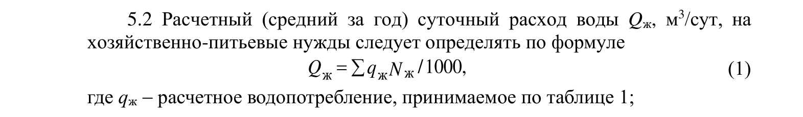
Q_{ж}=\sum{q_{ж}N_{ж}/1000}
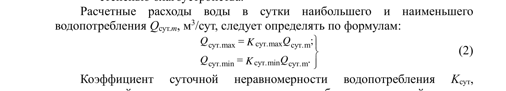
\left.\begin{aligned}Q_{сут.max}=K_{сут.max}Q_{сут.m};\\Q_{сут.min}=K_{сут.min}Q_{сут.m}.\end{aligned}\right\}
\left.\begin{aligned}Q_\text{сут.max}=K_\text{сут.max}Q_\text{сут.m};\\Q_\text{сут.min}=K_\text{сут.min}Q_\text{сут.m}.\end{aligned}\right\}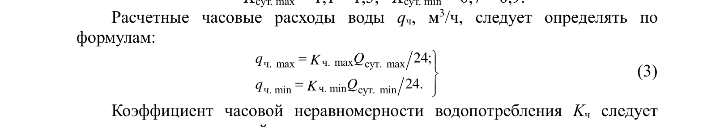
\left.\begin{aligned}q_{ч.max}=K_{ч.max}Q_{сут.max}/24;\\q_{ч.min}=K_{ч.min}Q_{сут.min}/24.\end{aligned}\right\}
\left.\begin{aligned}q_{ч.max}=K_{ч.max}Q_\text{сут.max}/24;\\q_{ч.min}=K_{ч.min}Q_\text{сут.min}/24.\end{aligned}\right\}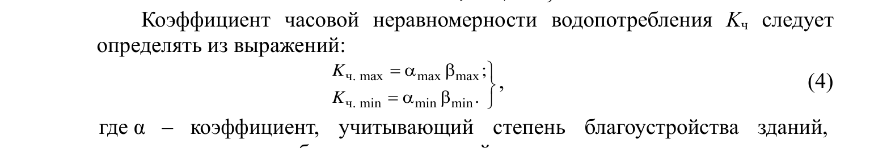
\left.\begin{aligned}K_{ч.max}=\alpha_{max}\beta_{max};\\K_{ч.min}=\alpha_{min}\beta_{min}.\end{aligned}\right\}
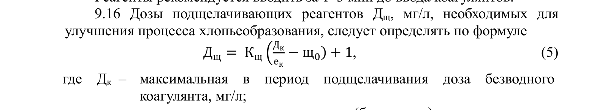
Д_{щ}=К_{щ}(\frac{Д_{к}}{е_{к}}−щ_{0})+1
Д_{щ}=K_{щ}(\frac{Д_{к}}{e_{к}}−щ_{0})+1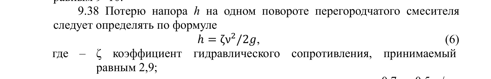
h=\zeta\nu^{2}/2g
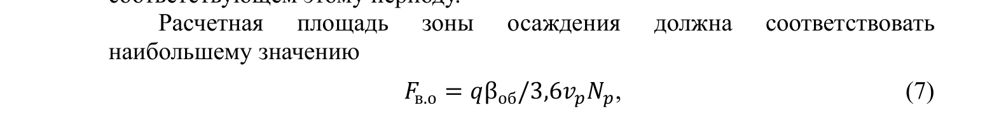
F_{в.о}=q\beta_{об}/3,6v_{p}N_{p}
F_\text{в.о}=q\beta_\text{об}/3,6v_{p}N_{p}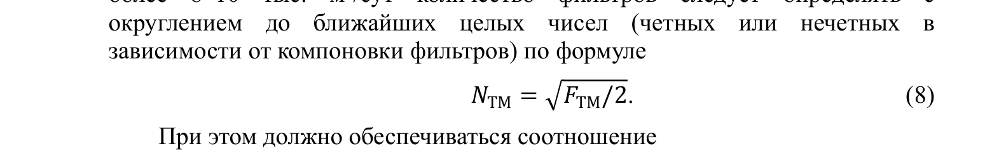
N_{ТМ}=√F_{ТМ}/2.
N_\text{ТМ}=√F_\text{ТМ}/2.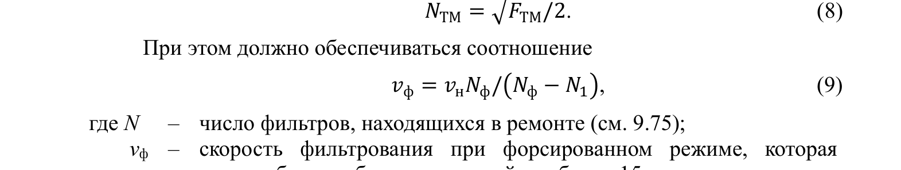
v_{ф}=v_{н}N_{ф}/(N_{ф}−N_{1})
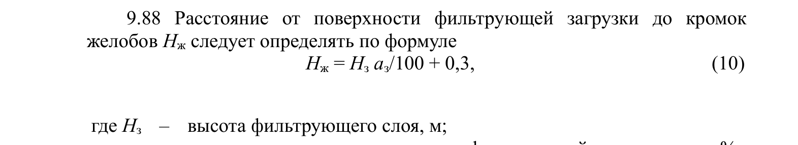
Н_{ж}=Н_{з}а_{з}/100+0,3
H_{ж}=H_{з}a_{з}/100+0,3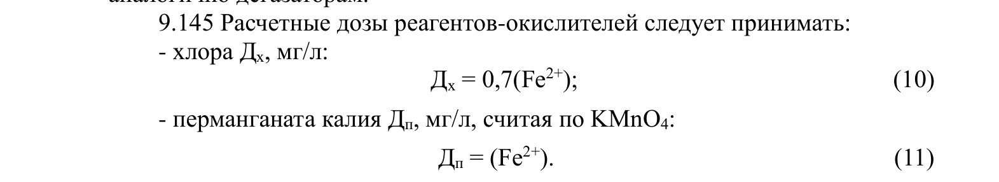
Д_{х}=0,7(Fe^{2+})
Д_{x}=0,7(Fe^{2+})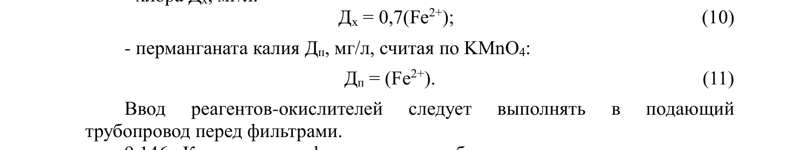
Д_{п}=(Fe^{2+}).
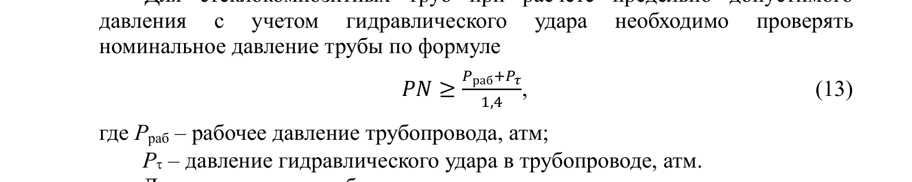
PN≥\frac{P_{раб}+P_{\tau}}{1,4}
PN≥\frac{P_\text{раб}+P_{\tau}}{1,4}